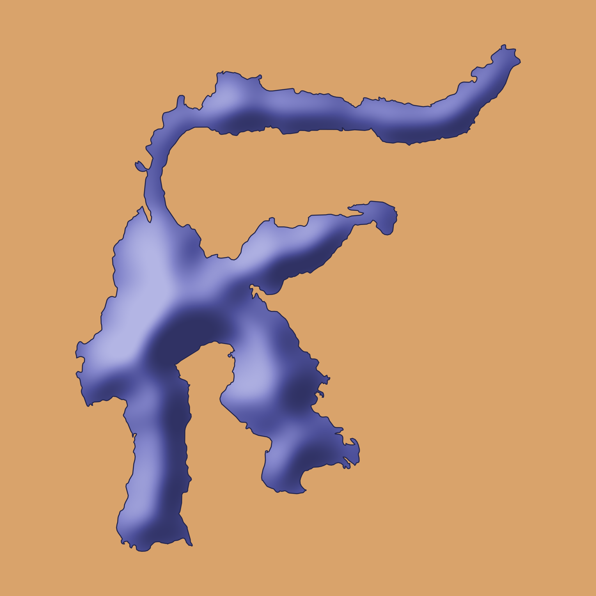
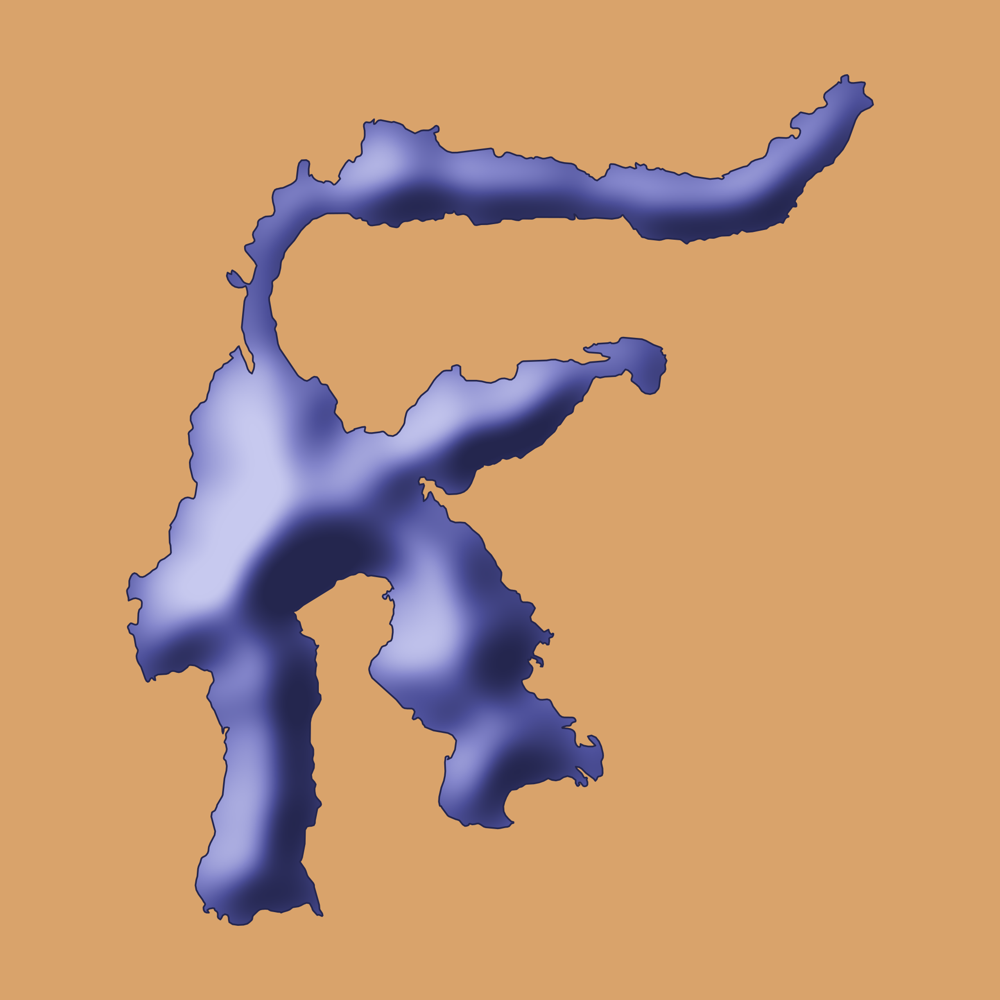
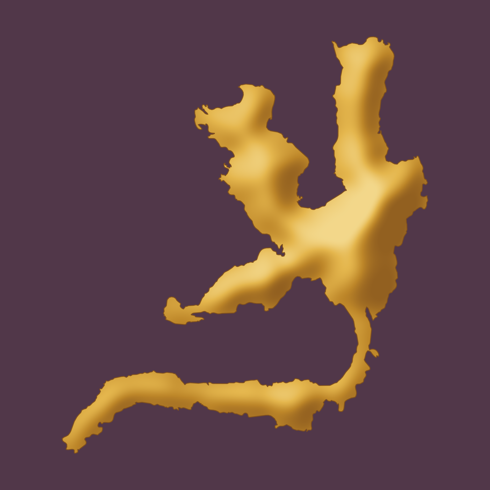
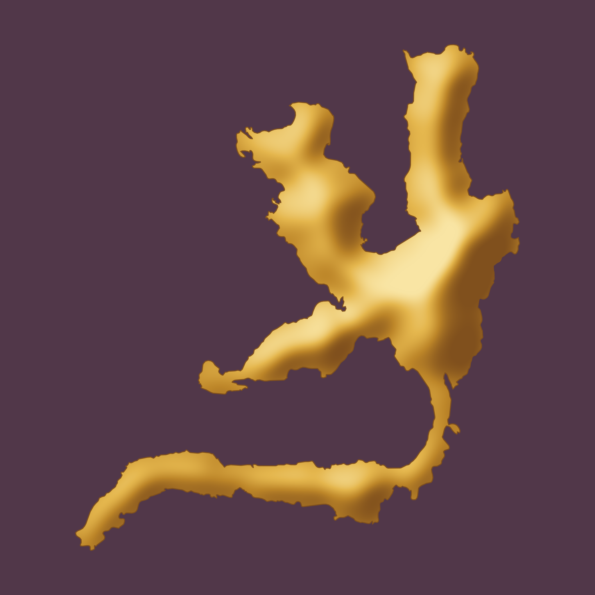

<!doctype html><html lang="de"><meta charset="utf-8"><meta name="viewport" content="width=device-width,initial-scale=1"><title>Sulawesi – Soft Stone comparison</title><style>body{margin:0;background:#171717;color:#eee;font:15px system-ui}main{max-width:1200px;margin:auto;padding:12px}h1{font-size:22px}h2{font-size:17px}.pair{display:grid;grid-template-columns:1fr 1fr;gap:8px}figure{margin:0;min-width:0}img{width:100%;display:block}figcaption{padding:8px 0}section{margin-bottom:24px}</style><main><h1>000010 · Sulawesi</h1><section><h2>North-Up · Tropical Indigo</h2><div class="pair"><figure><figcaption>Soft Stone v4.3</figcaption><a href="000010-N-draft.png"></a></figure><figure><figcaption>Soft Stone v4.4</figcaption><a href="v44/000010-N-draft.png"></a></figure></div></section><section><h2>South-Up · Golden Saffron</h2><div class="pair"><figure><figcaption>Soft Stone v4.3</figcaption><a href="000010-S-draft.png"></a></figure><figure><figcaption>Soft Stone v4.4</figcaption><a href="v44/000010-S-draft.png"></a></figure></div></section></main></html>